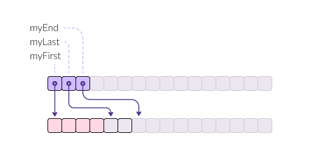

std::vector
A vector is a sequence container that supports (amortized) constant time
insert and erase operations at the end; insert and erase in the middle take
linear time. Storage management is handled automatically, though hints can be
given to improve efficiency.
Examples
show/hide
Implementation
1template<typename T>
2class vector {
3 T* myFirst;
4 T* myLast;
5 T* myEnd;
6}

-
myFirst- pointer to the first element (if the vector is not empty). -
myLast- pointer to one past the last element in the vector.It indicates where the next element will be inserted.
-
myEnd- pointer to one past the end of the allocated capacity.It indicates the end of the allocated storage space, not necessarily the end of the current elements.
Size
std::vector has O(1) memory overhead, no matter how many elements are in the
vector.
sizeof(x) = 24
SizeOf(x) = sizeof(x) + N * sizeof(T)
See Also
plf::colonystd::hive(since C++20)
Reference
capacity
-
empty() const -> bool -
size() const -> size_tReturns: The number of elements in the vector, i.e.,
distance(v.begin(), v.end()).
Complexity : O(1)
Examples: … -
max_size() const -> size_t -
capacity() const -> size_t
element access
-
at(size_t n) const -> const T& -
back() const -> const T& -
front() const -> const T& -
operator[](size_t n) const -> const T&
data access
-
data() const noexcept -> const T*
modifiers
-
append_range(R&& rg) -> void -
clear() noexcept -> void -
template<class... Args>
emplace(const_iterator position, Args&&... args) -> iterator -
template<class... Args>
emplace_back(Args&&... args) -> reference -
erase(const_iterator position) -> iterator -
insert(iterator pos, const T&) -> iteratorinsert(const_iterator pos, T&& x) -> iteratorinsert(const_iterator pos, size_type n, const T& x) -> iteratortemplate<class InputIterator>
insert(const_iterator pos, InputIterator first, InputIterator last) -> iterator -
pop_back() -> void -
push_back(const T& x) -> voidpush_back(T&& x) -> void -
swap(vector& other) noexcept -> void
Functions
-
template<class T, class Allocator, class U>
erase(vector<T, Allocator>& c, const U& value) -> typename vector<T, Allocator>::size_type;Equivalent to :
auto it = remove(c.begin(), c.end(), value); auto r = distance(it, c.end()); c.erase(it, c.end()); return r; -
template<class T, class Allocator, class Predicate>
erase_if(vector<T, Allocator>& c, Predicate pred) -> typename vector<T, Allocator>::size_type;Equivalent to:
auto it = remove_if(c.begin(), c.end(), pred); auto r = distance(it, c.end()); c.erase(it, c.end()); return r;